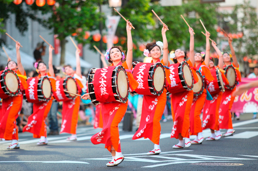
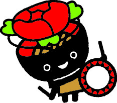
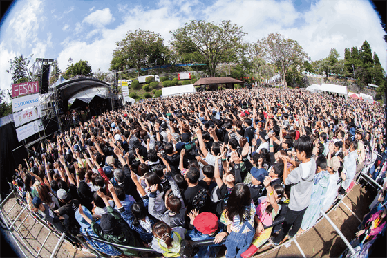

event
さんさ祭り

盛岡さんさ踊り 「盛岡さんさ踊り」は毎年8月1日から4日、盛岡市内の路上や各所を会場に華やかに行われている夏まつりです。 一つの祭として太鼓が参加する数では日本一を誇り、「和太鼓演奏世界一」としてギネスブックにも認定されました。 大勢の盛岡市民が企業や各種グループのチームに加わってパレードで踊ります。

三陸花火大会
三陸をあげてのさまざまなステージイベントと大規模な花火エンターテイメントショーに加えて、全国約20社の花火師たちが腕を競い合う競技部門も。花火師同士や有識者だけでなく、会場のみなさまにも投票いただき、花火師たちが力の限りを尽くす“本気の花火”をぜひ、その目で。

石垣musicfestival

出演は、ジャンルは問わずメジャー、インディーズで活動するゲストミュージシャンと、応募で選ばれた岩手県内で活動しているアマチュアミュージシャンである。岩手公園をメインに、市内各地に特設ステージを設けて開催された。2009年より全会場を完全無料のフリーライブフェスティバルとなり現在にまで続いている。